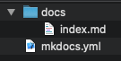

Setting Up Your Local Project
This section guides you through the process of creating your local documentation repository.
Installing and Creating Your Project
- Install MkDocs by running this command in your Terminal:
pip install mkdocs - Verify the installation by running this command:
mkdocs --version
You should get something like this as a response:
mkdocs, version 1.0.4 from ... - Run this command to create your local project:
mkdocs new docs-as-code-tutorial(ℹ) You can use a different name for your project
This creates a folder with a configuration file calledmkdocs.ymland a folder calleddocs, which contains anindex.mdfile.

Theindex.mdfile is the main page of your new site. You can add more pages by creating new Markdown files inside thedocsfolder. Below is a section explaining how to do it. - Navigate to your created project with:
cd docs-as-code-tutorial - You can preview your static site as you work on it by running the following command:
mkdocs serve
This command starts a local server with your rendered page so you can see how it will look before you publish it. - Open a web browser and go to the local http server listed in the last command response (
http://127.0.0.1:8000/) to see your rendered page.
Customizing Your Site
You can start modifying the files in your project with your documentation details.
- Open the
index.mdfile and change the title and information in it using Markdown syntax. Save your changes to see them update directly on your local server. - Open the
mkdocs.ymlfile and change thesite_namevalue to your documentation project name:
site_name: Docs-as-code Tutorial
Creating More Pages
You can add more pages to your site by creating more Markdown files inside the docs folder. Any Markdown file you place in the folder will automatically appear on your site as a new page on the Navigation panel.
You can personalize how your pages are displayed on the Navigation panel by modifying the mkdocs.yml configuration file. To do so, add the name you want each page to have and specify its corresponding .md file as key: value pairs under a nav key, like so:
site_name: Docs-as-code Tutorial
nav:
- Home: index.md
- Local Setup: local-site.md
- Remote Repository: repo.md
- Deploy: deploy.md
The order of the files is going to be the same in which they appear on your navigation panel:
Building the Static Files
Follow these steps to build the static files of your site:
- Run the following commang in your Terminal from your documentation directory:
mkdocs build - Run the following command to create a file that avoids pushing your build files into the remote repository:
echo "site/" >> .gitignore
The static files (index.html, CSS files, and others) are now available in thesitedirectory. You can use the files in that directory to host your site in an AWS S3 bucket or any other static site hosting service.
(You won't need to do this for this tutorial, this is only in case you later decide to explore a different approach.)